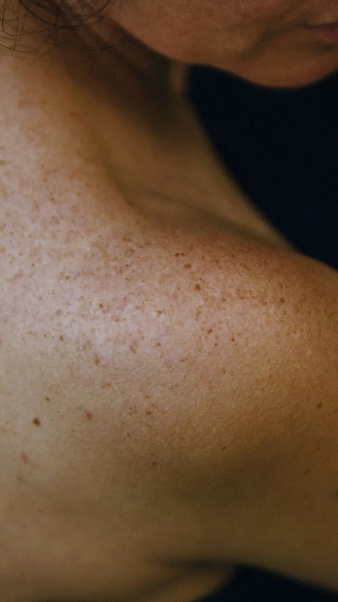
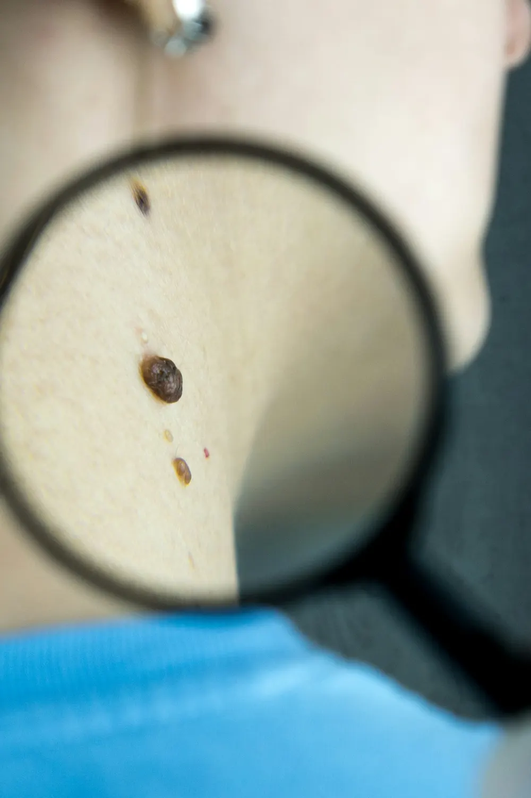

Nº 01Dermatologia clínica
Acne e rosácea
Tratamento da causa, com rotina simples para casa e acompanhamento até a pele estabilizar.
- Indicação
- acne, rosácea, oleosidade
- Atendimento
- presencial e on-line
Dermatologia clínica, cirúrgica e estética em Campinas, Valinhos e on-line.
5,0 no Google
avaliações de pacientes de Campinas e região
Atendo cada pessoa como uma consulta inteira, não como um procedimento. Primeiro entendo sua pele, sua rotina e o que te incomoda. Depois, juntas, decidimos o caminho.
A ciência explica. O cuidado acompanha.
residência em dermatologia
e título de especialista
Do diagnóstico de uma pinta ao tratamento de manchas: cada plano começa por uma avaliação.
Tratamento da causa, com rotina simples para casa e acompanhamento até a pele estabilizar.

Investigação da causa e um plano que combina cuidados em casa e procedimentos no consultório.
Toxina botulínica e bioestimuladores de colágeno, com dose indicada na avaliação e resultado natural.

Avaliação de pintas, retirada de lesões no consultório e investigação da queda de cabelo.
Sem pressa e sem surpresa: você sabe o que vai acontecer antes de chegar.
Uso: para quem quer entender a própria pele
Sua rotina, os produtos que você usa e o que te incomoda.
Avaliação clínica, com dermatoscópio quando necessário.
Você sai sabendo o que fazer em casa e no consultório.
Para ver como sua pele respondeu e ajustar o plano.
“A Dra. Helena explicou tudo com calma e saí da consulta com um plano que eu consigo seguir.”
“Atenciosa do começo ao fim. Minha pele nunca esteve tão bem.”
“Consultório acolhedor e atendimento pontual.”
Funciona bem para acompanhamento, acne, manchas e queda de cabelo, por exemplo. Quando for preciso examinar de perto (pintas, lesões, procedimentos), a Dra. Helena indica a consulta presencial.
Em Campinas, na Rua das Magnólias, 450, no Cambuí, e também em Valinhos. Ao agendar pelo WhatsApp, você escolhe a cidade.
A equipe informa pelo WhatsApp, junto com os horários disponíveis.
Se puder, leve exames recentes e os nomes dos produtos e medicamentos que você usa na pele. Isso ajuda a montar o plano já no primeiro encontro.
Preencha os três campos e a conversa abre no WhatsApp com a mensagem pronta.